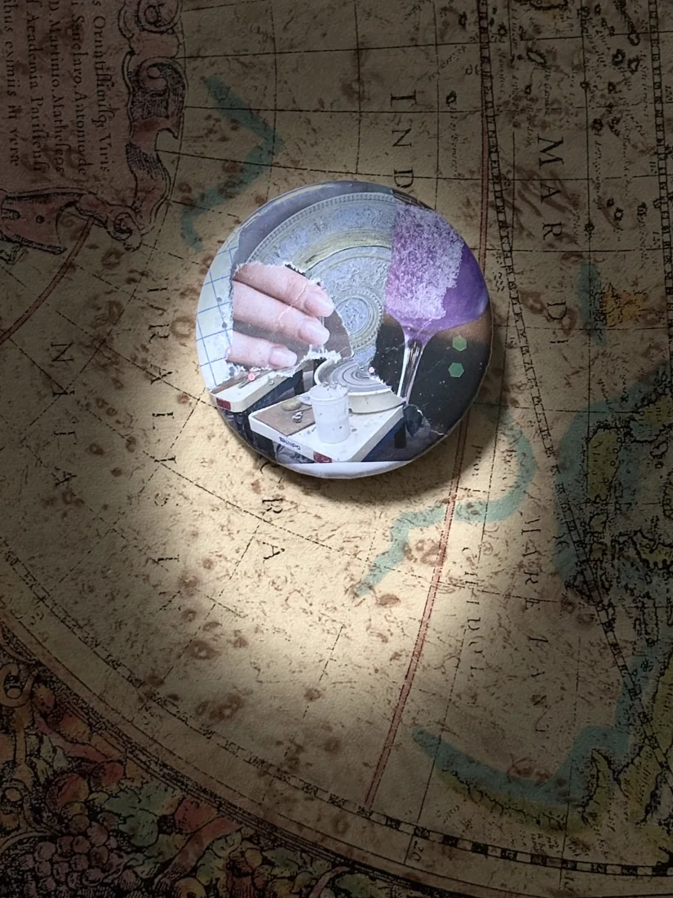

things / no. 00013 · collage pin
date unrecorded
purple glass collage

a hand, a purple glass, & fragments of previously unrelated images.
filed under: things
things / no. 00013 · collage pin
date unrecorded

a hand, a purple glass, & fragments of previously unrelated images.
filed under: things